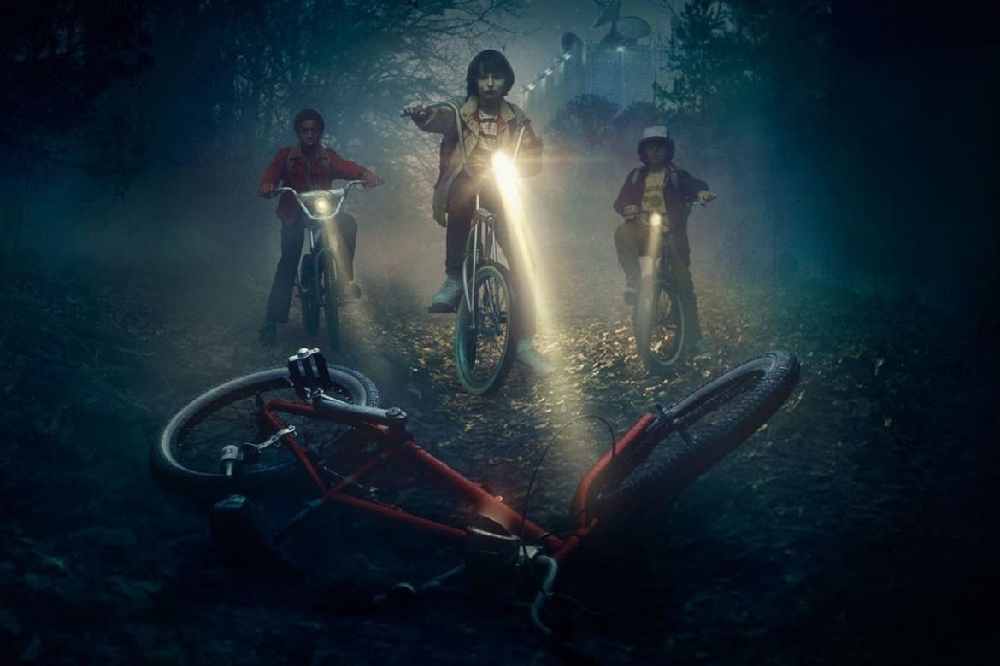
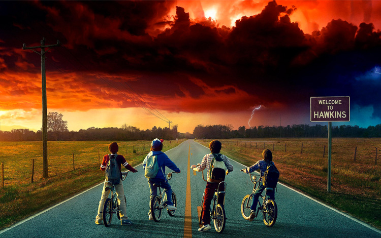
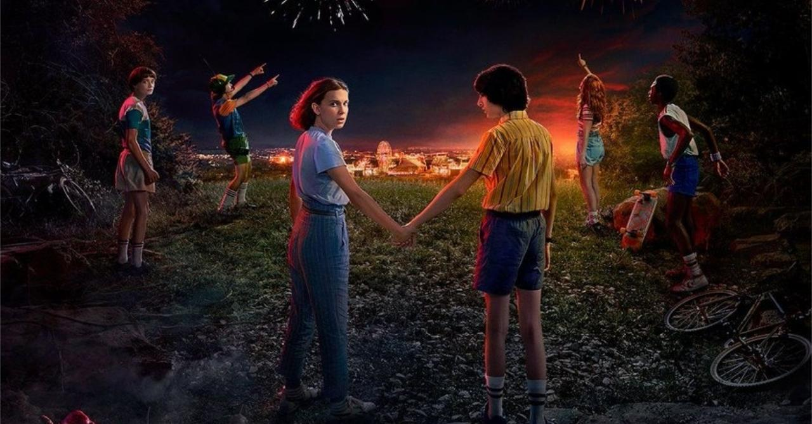
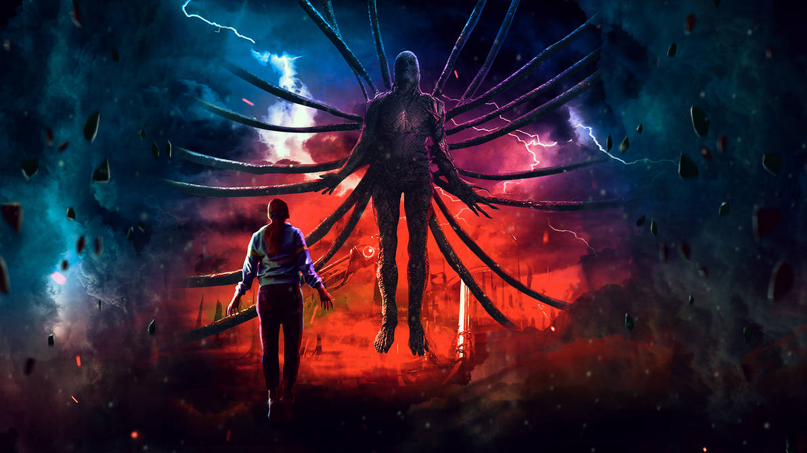

O Mundo Invertido do Alvaro
O Mundo Invertido parece uma cópia do nosso mundo, mas com criaturas horrendas, tempestades assustadoras, muita escuridão e entidades malignas. Um reino controlado por Vecna, que tem planos de trazer tudo isso ao nosso mundo.

Stranger Things Vol. 2
Avançando para 1984, os cidadãos de Hawkins tentam seguir em frente após os horrores que aconteceram no primeiro ano da série. Will Byers foi resgatado do Mundo Invertido, mas uma entidade maior e mais sinistra ainda ameaça aqueles que sobreviveram.
A segunda série mais assistida da Netflix
- 
- 
- 
- 
Hellfire Club
Eddie Munson, o líder do Hellfire Club do Hawkins High School convida você para embarcar em uma grande aventura. Nosso clube secreto, é um espaço criado para jogadores de RPG onde realizamos partidas emocionantes e travamos batalhas épicas para derrotar Vecna e seus aliados.